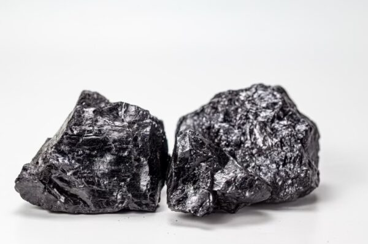

Graphite
Batteries
35%
of demand · 2025
Symbol: C · Crystalline carbon · Hexagonal graphene layers
Science: The most stable form of carbon under standard conditions. Structurally, stacked graphene sheets — hexagonal honeycomb lattices of carbon — held together by weak van der Waals forces (interlayer spacing: 0.335 nm). Highly anisotropic: conducts heat and electricity excellently within the planes, but acts as an insulator perpendicular to them. Chemically inert and refractory, remaining stable in non-oxidising environments up to 3,000 °C, but oxidises to CO₂ in air above 700 °C. The weak interlayer bonds allow sheets to slide freely — the origin of graphite's self-lubricating character.
Application: The predominant anode material in all Li-ion EV batteries: lithium ions intercalate ('sandwich') between graphene layers during charging without structural damage. Also used in high-temperature crucibles for steel furnaces, as a dry lubricant for locks and high-temperature machinery, as a neutron moderator in nuclear reactors, and — combined with clay — as the 'lead' in pencils (from the Greek graphein, 'to write'). Synthetic graphite exceeds 99.9% purity carbon.
Source: China produces approximately 80% of the world's natural graphite and dominates synthetic graphite production (manufactured from petroleum coke in Acheson furnaces above 2,100 °C). Natural graphite occurs in three forms: flake, amorphous, and lump. Inhalation of graphite dust can cause graphite pneumoconiosis.
Price story: Historically more price-stable than other battery raw materials. However, anode-grade battery graphite demand is now growing faster than non-Chinese supply capacity can match, attracting significant investment in Mozambique, Madagascar, and North America.